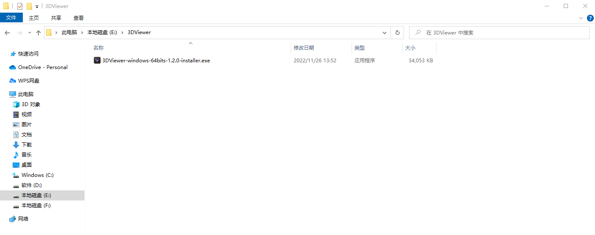
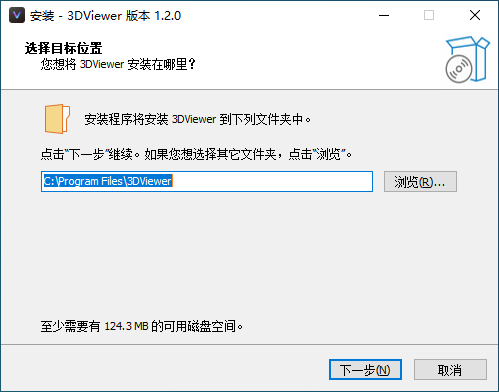
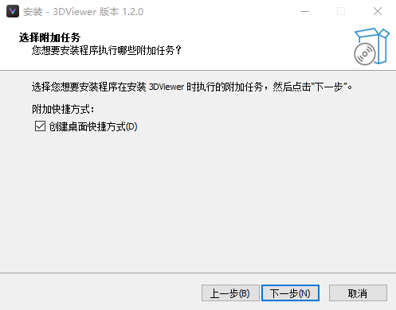
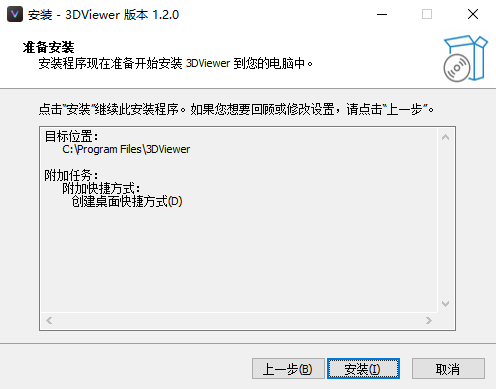
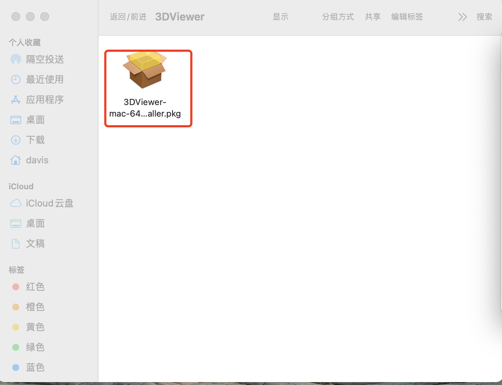
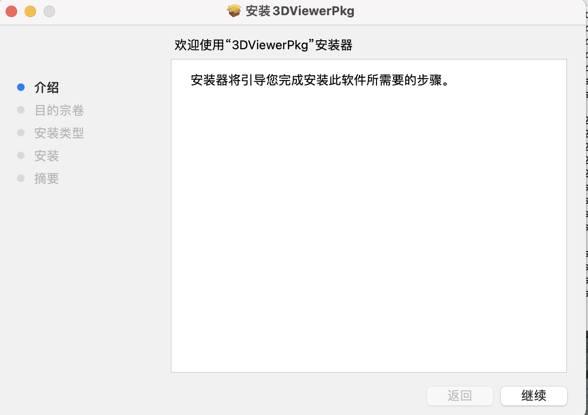
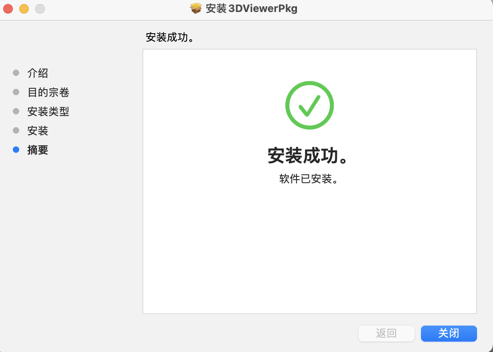
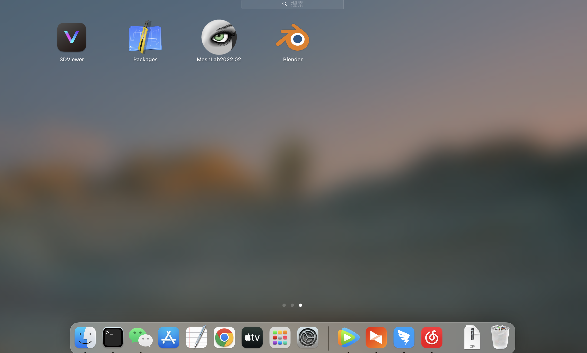
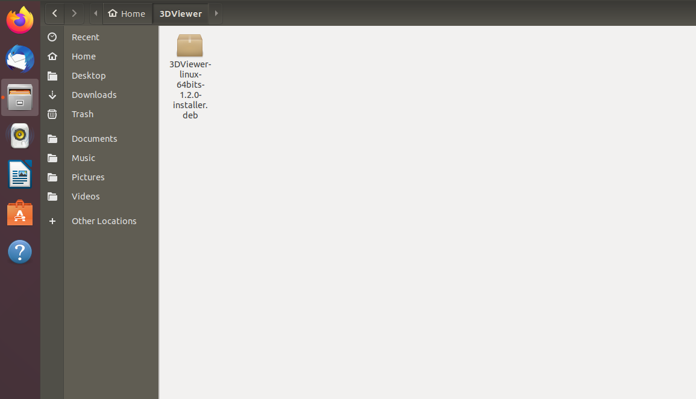

在Windows下安装3DViewer
鼠标双击3DViewer安装包

在弹出框内选择安装时使用的语言，然后点击确定

然后在弹出框内点击“浏览”选择安装目录，点击下一步

在新的弹出框内点击“下一步”

接着在弹出框内点击“安装”，等待软件完成安装

在MacOS下安装3DViewer
拷贝3DViewer-mac-64bits-xxx-installer.pkg安装包到MacOS系统中

鼠标左键双击该文件进入安装页面，点击页面上的“继续”按钮

然后在新的弹出框内点击“安装”按钮

点击“安装”按钮后提示输入密码，输入MacOS登陆密码后点击“安装软件”按钮

等待安装完成，看到页面上提示“安装成功”后点击“关闭”按钮关闭当前弹出框

运行3DViewer：打开电脑的启动台，找到3DViewer图标，鼠标左键点击该图标打开软件

在Linux下安装3DViewer
拷贝3DViewer-linux-64bits-xxxx-installer.deb安装包到Linux系统中

在.deb安装目录下点击鼠标右键，然后点击“Open in Terminal”，打开终端

使用 sudo dpkg -i 命令安装程序：dpkg -i 后面输入安装包文件名称，因为需要管理员权限，所以需要加sudo，之后输入密码，等待安装完成
sudo dpkg -i 3DViewer-linux-64bits-1.2.0-installer.deb
运行程序：在应用程序启动页面找到3DViewer图标，鼠标左键点击启动程序